變異數分析 (ANOVA)
簡介
在前兩章當中，我們曾經探討過「兩組樣本的平均值檢定」問題，當兩組樣本互相獨立時， 我們可以透過檢定  的信賴區間，採用 T 分布去檢定 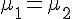 是否為真， 這種方法稱為合併 T 檢定 (pooled T test)。
的信賴區間，採用 T 分布去檢定 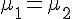 是否為真， 這種方法稱為合併 T 檢定 (pooled T test)。
在此、先讓我們再次透過 R 軟體，進行一次 T 檢定，以便喚起讀者的記憶。
檢定兩樣本群的平均值是否相同
> x = rnorm(20, 5, 1)
> x
[1] 6.240855 4.229226 5.349843 6.023241 5.613232 5.300235 4.696128 5.452365
[9] 4.567735 5.260747 3.800322 6.168725 6.196059 4.969572 6.251078 3.549983
[17] 6.432844 5.308146 4.978811 4.944134
> y = rnorm(20, 5, 1)
> y
[1] 5.969639 5.400434 4.231995 4.804537 3.098015 5.481365 6.016810 2.769489
[9] 6.687201 4.240217 6.602660 4.777928 4.825274 4.110038 5.651073 5.829578
[17] 4.651262 6.036818 3.459562 5.993473
> t.test(x, y, var.equal=TRUE)
Two Sample t-test
data: x and y
t = 0.7519, df = 38, p-value = 0.4567
alternative hypothesis: true difference in means is not equal to 0
95 percent confidence interval:
-0.3973599 0.8669515
sample estimates:
mean of x mean of y
5.266664 5.031868
> z = rnorm(20, 4, 1)
> t.test(x, z, var.equal=TRUE)
Two Sample t-test
data: x and z
t = 5.9399, df = 38, p-value = 6.883e-07
alternative hypothesis: true difference in means is not equal to 0
95 percent confidence interval:
1.079955 2.196671
sample estimates:
mean of x mean of y
5.266664 3.628351
> 在以上檢定中， x, y 兩者都是由 rnorm(20, 5, 1) 這個指令 (平均值 5，標準差為 1) 產生的樣本，所以檢定的結果 t.test(x, y, var.equal=TRUE) 之 p-value = 0.4567 ，由於該值遠大於 1-95% = 0.05，所以檢定結果無法否認虛無假設 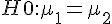 ，而且信賴區間為 (-0.3973599, 0.8669515) 包含 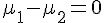 ，這兩者都代表我們無法否認 H0。
但是、在 t.test(x, z, var.equal=TRUE) 這個檢定中，由於 z 是 rnorm(20, 4, 1) 這個指令 (平均值 4，標準差為 1) 產生的樣本，檢定的結果 p-value = 6.883e-07 也遠小於 0.05，因此強力的否決了 的可能性， 這點從信賴區間 (1.079955, 2.196671) 不包含 0 這件事情上，也可以清楚的看到。
變異數分析 (Analysis of Variance, ANOVA)
但是、如果樣本群的數目變多了，不是兩組樣本，而是 k 組樣本的話，事情就會變得比較麻煩！
如果要用上述的合併 T 檢定對 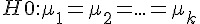 中的每個配對都作檢定，那麼就要對 (1, 2), (1, 3), ... (1, k), (2, 3), (2,4), ... (2, k), .... (k-1, k) 等 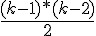 種配對都進行一次檢定，這樣的方式有點太麻煩了。
此時、我們可以採用變異數分析 (中國大陸稱為方差分析) 的方法，來檢定假設 H0 是否成立，也就是檢驗是否所有樣本群的平均值都相同。
讓我們暫時不去探討背後的數學，直接用 R 軟體進行一次變異數分析的檢定，看看這種檢定是如何進行的，以下是一個簡單的操作過程。
> X = rnorm(40, 5, 1) # 產生四十個樣本 (平均值 5，標準差 1)
> X
[1] 5.584603 4.052913 4.434469 5.844309 5.286695 5.188169 4.796683 3.913132
[9] 5.467150 5.740397 4.528423 4.395270 4.994147 4.014513 6.259213 6.898331
[17] 3.792135 3.879688 5.334643 5.887895 5.647250 5.603816 5.465186 6.703394
[25] 5.153999 4.855386 2.129850 5.477026 4.785934 4.138114 5.726216 3.581281
[33] 5.255695 4.515353 6.391714 3.726963 5.744328 5.314164 4.647955 4.848313
> A = factor(rep(1:4, each=10)) # 產生標記 1, 2, 3, 4 各 10 份
> A
[1] 1 1 1 1 1 1 1 1 1 1 2 2 2 2 2 2 2 2 2 2 3 3 3 3 3 3 3 3 3 3 4 4 4 4 4 4
[37] 4 4 4 4
> XA = data.frame(X, A) # 建立框架變數 XA，為每個 X 樣本分別標上 1, 2, 3, 4 等標記。
> aov.XA = aov(X~A, data=XA) # 進行「變異數分析」，看看 X 與 A 之間是否有相關。
> summary(aov.XA) # 印出「變異數分析」的結果報表
Df Sum Sq Mean Sq F value Pr(>F)
A 3 5.015 1.6718 2.119 0.115
Residuals 36 28.408 0.7891
> plot(XA$X~XA$A) # 繪出 X~A 的盒狀圖在上述操作中，我們用 X = rnorm(40, 5, 1) 產生四十個樣本，然後用 A = factor(rep(1:4, each=10)) 與 XA = data.frame(X, A) 這個指令將這四十個樣本分為四群，每群 10 個，分別標以 1, 2, 3, 4 的標記，成為 XA 這個框架 (frame) 變數，然後利用 `aov.XA = aov(X~A, data=XA)' 這個指令進行「變異數分析」，並用 summary(aov.XA) 指令印出分析結果。
您可以看到在分析結果中，Pr(>F) = 0.115 ，並沒有低於 (1-95%) 的 0.05 範圍，因此各組的平均值間沒有明顯差異，我們無法否認 H0。
最後我們用 plot(XA$X~XA$A) 這個指令匯出盒狀圖，就可以大致看到四組分佈的情況。

圖、X 與 A 之間關係的盒狀圖
但是、如果我們再用 rnorm(10, 4, 1) 這個指令產生一組樣本群加入上述資料 X 中，並將這組新產生的樣本群標示為編號 5 ，由於 此組新樣本群的母體平均值為 4 (而不是 5)，因此應該會有明顯不同，以下是我們的實驗操作過程。
> Y = c(X, rnorm(10, 4, 1)) # 將 X 補上 10 個均值為 4 的隨機樣本，成為 Y
> Y
[1] 5.584603 4.052913 4.434469 5.844309 5.286695 5.188169 4.796683 3.913132
[9] 5.467150 5.740397 4.528423 4.395270 4.994147 4.014513 6.259213 6.898331
[17] 3.792135 3.879688 5.334643 5.887895 5.647250 5.603816 5.465186 6.703394
[25] 5.153999 4.855386 2.129850 5.477026 4.785934 4.138114 5.726216 3.581281
[33] 5.255695 4.515353 6.391714 3.726963 5.744328 5.314164 4.647955 4.848313
[41] 3.516310 4.174873 2.541251 2.851404 4.862902 2.739729 2.848565 3.169462
[49] 4.245488 3.543660
> B = c(A, rep(5, 10)) # 產生 10 個編號 5 的標號，將 A 擴充為 B，為新的 10 個樣本標號。
> B
[1] 1 1 1 1 1 1 1 1 1 1 2 2 2 2 2 2 2 2 2 2 3 3 3 3 3 3 3 3 3 3 4 4 4 4 4 4
[37] 4 4 4 4 5 5 5 5 5 5 5 5 5 5
> YB = data.frame(Y, B) # 建立框架變數 YB，為 XA 補上 10 個新樣本的結果
> aov.YB = aov(Y~B, data=YB) # 進行「變異數分析」，看看 Y 與 B 之間是否有相關。
> summary(aov.YB) # 印出「變異數分析」的結果報表
Df Sum Sq Mean Sq F value Pr(>F)
B 1 10.15 10.152 9.84 0.00292 **
Residuals 48 49.52 1.032
---
Signif. codes: 0 ‘***’ 0.001 ‘**’ 0.01 ‘*’ 0.05 ‘.’ 0.1 ‘ ’ 1
>
> plot(YB$Y~YB$B) # 繪出 Y~B 的盒狀圖於是當我們用 aov.YB = aov(Y~B, data=YB) 這個指令去進行「變異數分析」時，就會發現 Pr(>F) 為 0.00292，遠低於 0.05，所以我們可以否認假設 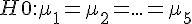 ，也就是認為應該至少有一樣本群與其他樣本群的平均值有顯著的不同。
以下是我們用上述 plot() 指令所繪出的結果，您可以發現第五群樣本明顯的偏低。

圖、Y 與 B 之間關係的盒狀圖
這也是為何 aov(Y~B, data=YB) 的結果會認為應該否認虛無假設 H0 的原因。
那麼、以上變異數分析的數學原理是甚麼呢？為何一次的計算就可以檢定這麼多組的樣本的平均值是否相同呢？以下是其數學推論。
假如所有的樣本用 X 表示，則第一組樣本群用 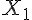 表示，第二組樣本群用 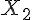 表示，....，第 k 組樣本群用 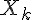 表示。
那麼第一組的第一個樣本可用 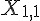 表示， ... 弟 i 組的第 j 個樣本可用 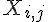 表示。
如果我們用  代表所有 X 中樣本的平均值，μ + αi 代表第 i 組樣本群的平均值，那麼我們可以寫出下列數學模型：
代表所有 X 中樣本的平均值，μ + αi 代表第 i 組樣本群的平均值，那麼我們可以寫出下列數學模型：
;
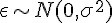 ; 且各個 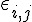 相互獨立。
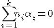 ;
其中的 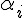 代表第 i 組平均與總平均的差異，而 則是每個樣本與組平均的差異。
我們想測試的是 ，也可以改寫成 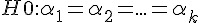 ， 檢定背後的數學想法是將「方差」(變異數) 分為兩部份如下：
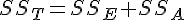 ;
其中
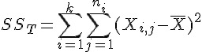 ; 描述總差異。
; 描述 .
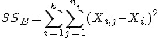 ; 描述 .
數學上可以證明，當 H0 成立時，以下算式也會成立：
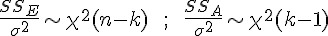 ;
而且 SS_A 與 SS_E 之間有獨立性，於是得到：
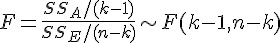 ;
因此就可以用 F 分布來進行變異數的檢定了，這就是「變異數分析」的數學原理。
兩兩之間的均值比較
雖然在上述分析 Y~B 的過程當中，我們否認了 這個假設，但是從分析結果中卻無法得知到底哪一個樣本群有明顯的不同。
此時我們可以用 pairwise.t.test 這個函數，來比較兩兩間的不同，以下是我們的比較過程：
首先我們對 X~A 兩者之間進行兩兩比較，您可以看到下列結果。
> pairwise.t.test(X, A)
Pairwise comparisons using t tests with pooled SD
data: X and A
1 2 3
2 1 - -
3 1 1 -
4 1 1 1
P value adjustment method: holm 上述結果發現 (1, 2) (1,3), (1,4), (2,3), (2,4), (3,4) 之間是相同的，所以其矩陣內容值都是 1。
但是如果我們用 pairwise.t.test(Y, B) 指令來檢定 Y 與 B 之間的關係，那就會得到如下結果。
> pairwise.t.test(Y, B)
Pairwise comparisons using t tests with pooled SD
data: Y and B
1 2 3 4
2 1.0000 - - -
3 1.0000 1.0000 - -
4 1.0000 1.0000 1.0000 -
5 0.0053 0.0060 0.0060 0.0060
P value adjustment method: holm 從上述的結果中，您可以看到第 5 列的內容為「0.0053 0.0060 0.0060 0.0060」，明顯的較低，這代表第 5 列的平均值有顯著的不同。
不過、您看到的比較結果，是透過 holm 這個調整方法對顯著值 (P) 進行調整過的，如果沒有調整過，則 (X,A) 及 (Y,B) 的兩兩比較結果將會如下所示。
> pairwise.t.test(X, A, p.adjust.method="none")
Pairwise comparisons using t tests with pooled SD
data: X and A
1 2 3
2 0.94 - -
3 0.94 1.00 -
4 0.90 0.96 0.96
P value adjustment method: none
> pairwise.t.test(Y, B, p.adjust.method="none")
Pairwise comparisons using t tests with pooled SD
data: Y and B
1 2 3 4
2 0.93936 - - -
3 0.93482 0.99545 - -
4 0.89612 0.95654 0.96108 -
5 0.00053 0.00067 0.00068 0.00079
P value adjustment method: none 您仍然可以看到第 5 列的內容「0.00053 0.00067 0.00068 0.00079」明顯的較低，而且幾乎都低於 0.05，因此樣本群 5 的平均值明顯與其他四群有所不同。
結語
在以上的實驗中，我們可以透過 R 軟體中的「變異數分析」函數 aov() 進行多組樣本的平均值比較，瞭解這些樣本的母體平均值是否相同。
假如「變異數分析」的結果認為有所不同，那麼我們就可以利用 pairwise.t.test() 函數，去檢驗看看到底哪些群體之間有所不同，以便找出明顯不同的樣本群。
這種方法在很多「自然科學與社會科學」的實驗當中，都會是很有用的，例如我們可以用「變異數分析」來檢驗「幾種銷售方式之間」是否有明顯的差異，「幾種農藥的除草效果」間是否有明顯差異等等，這些分析對我們進行多組樣本的統計實驗可以提供很好的指引效果。
參考文獻
- R语言与统计分析, 作者: 汤银才, ISBN: 9787040250626。